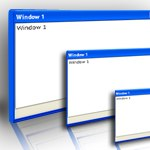

 Full Featured Windows
Full Featured Windows
Supports standard windows behaviour including:
-
Close
-
Minimize
-
Restore
-
Resize
-
Minimized windows on bottom of screen (web page)
-
Title bar
-
Status bar
-
Different look for top window
CSS Based Themes
The Windows look is controlled via CSS. Choose from existing themes, or create your own.
Rich API
Using the windows API create new windows controlling the following attributes:
-
Size
-
Position
-
Minimum width and height
-
Content, which can include various HTML markup
-
Title
-
Status bar
After the window is created you can:
-
Hide it
-
Close it
-
Bring it to the front
-
Move it
-
Resize it
-
Change title and status messages